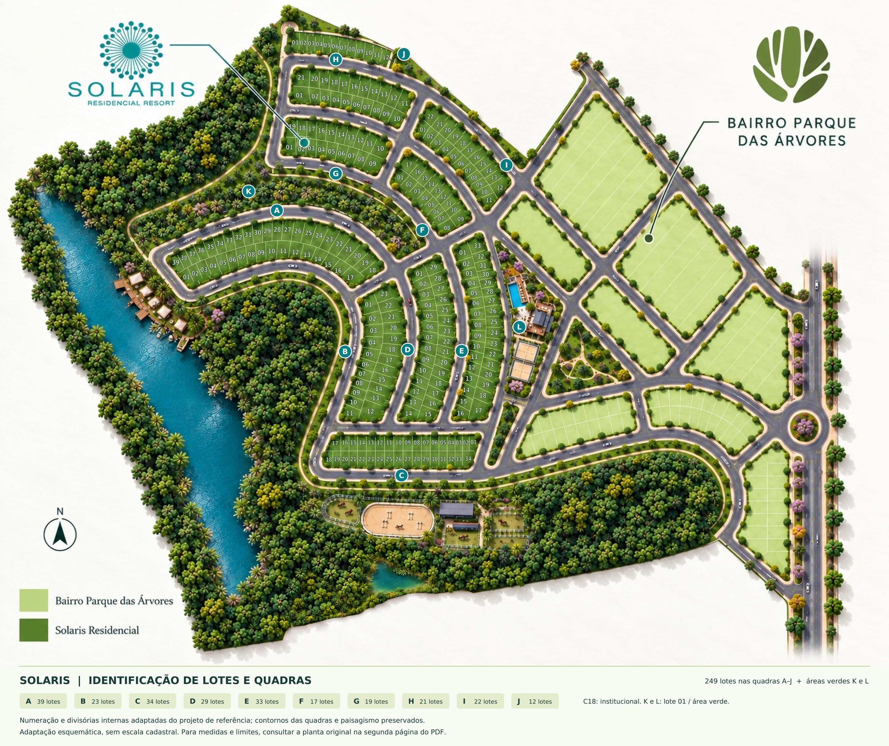

Arraste o mapa. Use a roda do mouse ou dois dedos para aproximar.
Escolha Destaques, Quadras ou Lotes. Busque um lote pelo número ou toque nele na planta.
Abra as perspectivas, amplie os detalhes e navegue pelas imagens.
Use + e − para ampliar, setas para mover e 0 para ver tudo. Esc fecha os painéis.